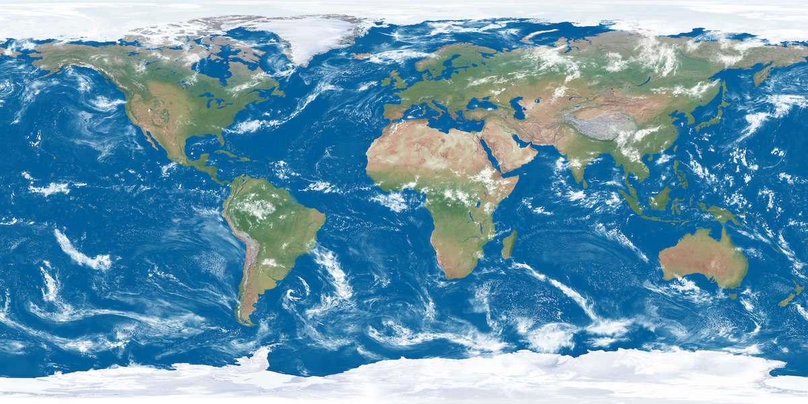
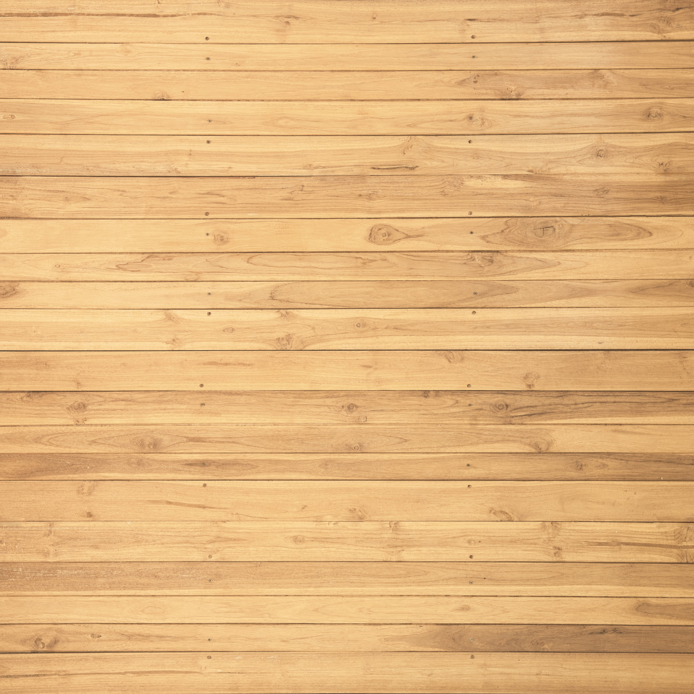

 
CSCI-510: Assn 7 - Textures
Your browser does not support the HTML5 canvas element.
Controls
x, y, z
Rotate the current shape forward about the x, y, or z axis
X, Y, Z
Rotate the current shape backward about the x, y, or z axis
c
Select the cube as the current shape
s
Select the sphere as the current shape